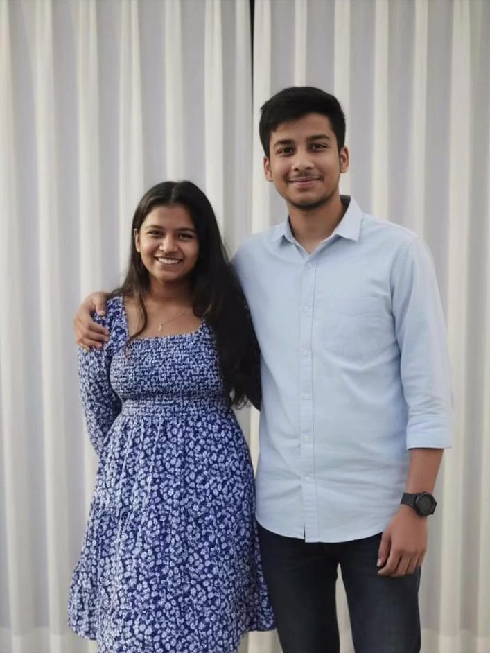
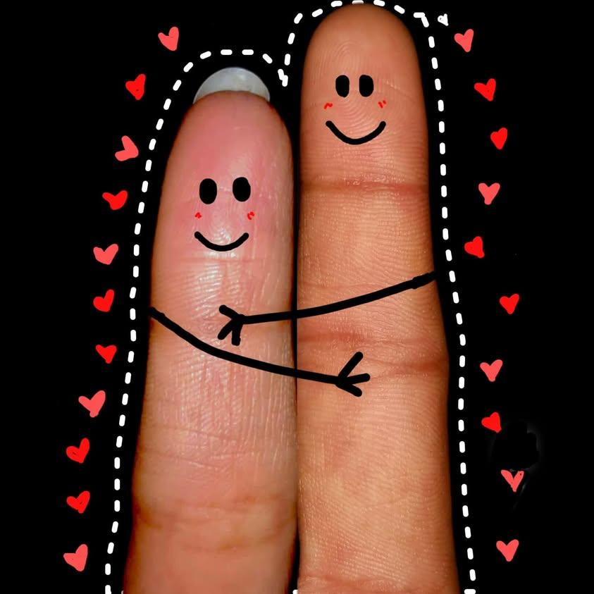
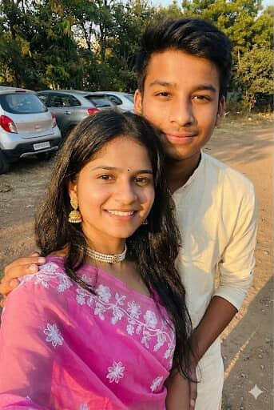

August 2023… 9th class… a random classroom, random glances, and a boy who secretly had a crush on me. I still smile thinking about how everything started so innocently. And then came 15th February 2024 — the day we became us. From that moment till today, every memory feels like a scene from my favorite movie.

Sai, you are my safest place. You are the calm in my chaos, the logic to my overthinking, the patience to my tantrums. I know I'm not perfect. Sometimes I get moody, stubborn, dramatic… and I'm truly sorry for the moments when my emotions overflow. Thank you for staying. Thank you for understanding me even when I don't understand myself.

I am so proud of the person you are becoming. Your growth, your dreams, your efforts — everything makes me admire you more every single day. I feel like the luckiest girl alive for being chosen by you, for being loved by you. If I had to choose again, in every lifetime, in every universe… I would still choose you.

With you, even the simplest days feel special. The laughter, the silly fights, the teasing, the random conversations — they mean the world to me. You are not just my boyfriend. You are my best friend, my comfort person, my favorite notification.
I promise to grow with you. To be better for you. To support your dreams. To celebrate your wins. To hold your hand during your hard days. I hope what we have continues to blossom into something even stronger, deeper, and more beautiful with time.
Forever Yours 🤍
Thank you for loving me. Thank you for choosing me. And today, on our second anniversary, I just want you to know — my heart is happiest when it's with you.